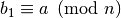
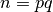
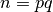

Metodi di fattorizzazione¶
- class models.FactorizationMethod.FactorizationMethod¶
Base class for factorization methods.
- attack(client)¶
Base method. When this method is called with an instance of RSAClient
Il metodo base prende in input un client di tipo models.RSAClient.RSAClient, dal quale recupera la chiave pubblica. Quindi procede ad attaccarlo secondo le tecniche previste dalle classi specifiche.
- is_successful()¶
Il metodo restituisce True esclusivamente se la fattorizzazione della chiave di un client è andata a buon fine. Altrimenti restituisce False.
- get_factors()¶
Il metodo restituisce la coppia di primi trovati nella fattorizzazione della chiave di un client.
Metodo di fattorizzazione p-1 e dell’esponente universale¶
Metodo di fattorizzazione p-1¶
Si scelga un intero a > 1. Si scelga una limitazione B. Si calcoli come segue. Siano  e tali che . Sia . Se si è trovato un fattore non banale di n.
Metodo di fattorizzazione dell’esponente universale¶
Siano r > 0 un esponente e a un intero tale che . Sia con m dispari. Posto , sia C per . Se , allora stop; la procedura fallisce nel fattorizzare n. Se esiste un u per cui , ci si ferma; la procedura fallisce nel fattorizzare n. Se esiste un u per cui , ma , allora è un fattore non banale di n.
Algoritmo¶
0 P-1&Exponent(n,e) 1 scegli un intero B in funzione della dimensione di n 2 a = 2 3 b = a^(B!) 4 d = gcd(b-1,n) 5 if(d > 1 && d < self.mod) return FATTORIZZATO 6 if(d == n) 7 trova k e m tali che B! = m*2^k 8 b0 = a^m % n 9 if(b0 == 1) return NON FATTORIZZATO 10 while(r > 0) 11 b1 = b0^2 % n 12 if(b1 == n-1) return NON FATTORIZZATO 13 else if(b1 == 1) 14 if(b0 != 1 && b0 != n-1) return FATTORIZZATO 15 b0 = b1 16 r--
- class models.FactorizationMethod.PMinusOneAndExponentMethod¶
- attack(client)¶
Il metodo invoca il metodo p_minus_one_factorization fornendo ad esso un intero B. Qualora il metodo fallisse provvede a fornire un esponente maggiore. L’operazione viene ripetuta un numero prestabilito di volte. Se l’esecuzione del metodo è fallimentare, allora non è possibile fattorizzare l’intero con questo metodo.
- p_minus_one_factorization(B)¶
Come si intuisce dal nome, questo metodo implementa l’algoritmo di fattorizzazione p-1. Qualora dovesse trovare un esponente valido per il metodo dell’esponente universale delega al metodo global_exponent_factorization
- global_exponent_factorization(a)¶
Il metodo implementa il metodo dell’esponente universale.
- elevate(a, B)¶
Il metodo effettua l’elevamento a potenza B! sfruttando la tecnica descritta dal metodo p-1.
Metodo del crivello quadratico¶
 se è possibile determinare un fattore non banale di n.
se è possibile determinare un fattore non banale di n.0 QuadraticSieve(n,e) 1 primes = base di fattorizzazione 2 matrix = matrice nulla 3 trova k quadrati e scomponili secondo primes per ottenere gli esponenti e mettili in matrix 4 matrix1 = matrix % 2 5 if(matrix contiene colonne con un solo 1) 6 elimina la riga corrispondente a quel 1 7 associa un peso ad ogni riga come somma degli 1 presenti 8 combinazioni = [] 9 for(int i=0; i<righe matrix; i++) 10 ri = matrix[i] 11 wi = weight[i] 12 combinazione = [ri] 13 candidate = righe con peso minore o uguale a quello delle riga i 14 for(int k=0; k<candidate; k++) 15 rk = matrix[k] 16 if(peso(ri+rk % 2) < peso(ri)) 17 combinazione.add(rk) 18 ri = ri+rk % 2 19 if(peso(ri)==0) 20 break 21 22 if(combinazione not empty && peso(ri) == 0) 23 combinazioni.add(combinazione) 24 analizza combinazioni
Trovare k quadrati è possibile, generandoli al variare di j e i in un certo range. Si considerano numeri il cui quadrato ha fattori esclusivamente tra i primi della base di fattorizzazione. Si conservano gli esponenti in una matrice e i numeri in una lista.
Trovare colonne con un solo 1 è possibile associando pesi alle colonne, così come possono essere facilmente associati alle righe e possono essere riposti in una lista.
Si itera su ogni riga della matrice con l’obiettivo di annullare il peso di una riga sommandola ad altre righe modulo 2. Si fanno combinazioni solo con righe di peso minore o uguale a quella corrente poichè se facessimo combinazioni con righe di peso maggiore, il peso risultante dalla combinazione sarebbe almeno uguale a quello attuale. Volendo minimizzare si scarta questa possibilità (che sarà considerata poi, quando si prenderanno in esame le righe attualmente scartate).
- Si itera su questo insieme di righe e si sommano gli elementi modulo 2. Se il peso della riga risultante è nullo abbiamo trovato un quadrato, quindi si esce e si memorizza la relazione trovata.
Infine si analizza ogni relazione. Si moltiplicano i numeri riposti inizialmente nella lista e i fattori primi della base, elevati a una potenza complessiva dimezzata. Se i numeri ottenuti non sono congruenti modulo n, si può calcolare il gcd della differenza dei due e n, ottenendo un suo fattore non banale.
- class models.FactorizationMethod.QuadraticSieveMethod¶
- attack(client)¶
Il metodo genera i numeri candidati alla fattorizzazione di n, li ripone nella matrice e invoca il metodo reduce, che elimina quelle righe che non possono comporre quadrati, poichè contengono primi con esponente dispari, quindi non accoppiabile con altri interi presenti. Chiama quindi find_squares che restituisce un insieme di relazioni. Le relazioni vengono passate a is_valid_relation. Se is_valid_relation riesce a trovare un fattore si esce, altrimenti si cercano nuovi interi per determinare una relazione che fattorizzi n. Quando si supera una soglia di ricorsione si abbandona.
- find_squares()¶
find_squares associa un peso ad ogni riga e procede alla determinazione delle relazioni tra righe nel metodo sopra citato. Se le trova le restituisce.
- reduce(matrix)¶
Il metodo sfruttando la libreria Numpy riduce la matrice rimuovendo ogni riga che presenti 1 isolati nelle colonne.
- is_valid_relation(rows)¶
Il metodo applica il principio fondamentale per tentare di fattorizzare il numero n. Se ci riesce calcola i due primi.
Attacco agli esponenti bassi¶
Teorema di M. Wiener¶
Siano p e q due primi con  . Sia  e siano ,
. Sia  e siano ,  tali che . Se , allora d può essere calcolato rapidamente (in tempo polinomiale in logn).
tali che . Se , allora d può essere calcolato rapidamente (in tempo polinomiale in logn).
- Si calcola la frazione continua e/n. Dopo ogni passo si ottiene A/B.
- Si pone k = A e d = B per calcolare poichè dunque C è candidato ad essere
- Se C non è intero si calcola il passo successivo nella frazione continua
- Se C è intero si calcolano le radici dell’equazione se le soluzioni sono intere si è fattorizzato n.